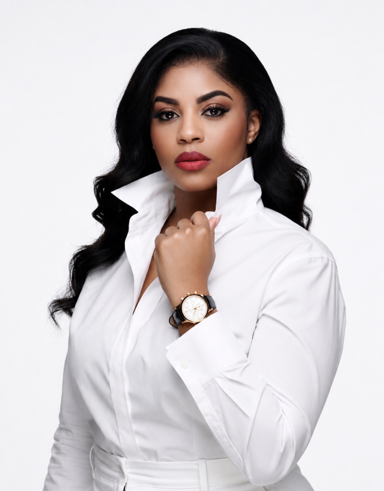

01
Blood Ties: Secrets Within
Season 1 short-form drama series centered on family, betrayal, hidden relationships and the secrets that can change everything.
SHORT-FORM DRAMA · SERIESINDEPENDENT FILM & TELEVISION
725 Productions develops and produces compelling film and television projects designed to connect with audiences and create lasting impact.

THE FOUNDER
Founder & Executive Producer
Centhia Etienne is the founder and executive producer behind 725 Productions, an independent production company focused on developing original stories with strong characters, emotional depth and commercial potential.
Her creative vision spans film, television, short-form drama and entertainment programming, with a focus on building projects that can connect with audiences while creating meaningful opportunities for collaboration and growth.
Connect with 725 Productions →SELECTED PROJECTS
Original concepts across film, television and entertainment.
Season 1 short-form drama series centered on family, betrayal, hidden relationships and the secrets that can change everything.
SHORT-FORM DRAMA · SERIESA stylish entertainment concept exploring ambition, image, relationships and the realities behind a life that looks perfect from the outside.
TELEVISION · ORIGINAL IPA growing slate of original film and television concepts developed for audiences seeking compelling characters, bold storytelling and meaningful entertainment.
FILM • TELEVISION • DEVELOPMENTWHAT WE DO
Original concepts, story development and project packaging.
Independent production for film, television and short-form projects.
Creative leadership, project strategy and production oversight.
Co-productions, strategic relationships and opportunities to build together.
LET'S CONNECT
725 Productions is open to conversations with producers, studios, distributors, talent, investors, filmmakers and entertainment organizations.